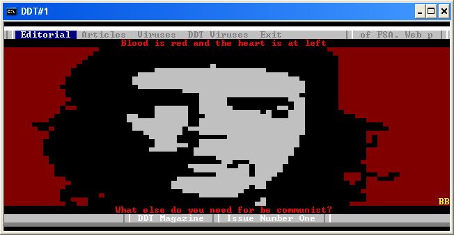

DDT #1
Editional
Index
Introduction to DDT by Billy Belcebu/DDT
Membership by Billy Belcebu/DDT
Distribution sites by Billy Belcebu/DDT
Greetings by All DDT Members
Disclaimer by Billy Belcebu/DDT
Interview with Pockets [FS] by Billy Belcebu/DDT
Interview with Wintermute by Billy Belcebu/DDT
Interview with Int13h/iKX by Billy Belcebu/DDT
Valencian VX meetings by Billy Belcebu/DDT
The magazine by Billy Belcebu/DDT
In the media and oddities by Billy Belcebu/DDT
Words from Billy Belcebu - Agur by Billy Belcebu/DDT
Articles
Heuristic technology by Billy Belcebu/DDT
Six ways for infect a COM by Int13h/iKX
Harder to detect (theory) by Billy Belcebu/DDT
Residence in Windows viruses at Ring-3 level by Billy Belcebu/DDT
Multiple payloads by DuSTFaeRie/DDT
Using Structured Exception Handler (SEH) by Billy Belcebu/DDT
Viric life and die theories by Billy Belcebu/DDT
Internet:A resource source for the Virus Writer by VirusBuster/29A
Billy Belcebu Virus Writing Guide 1.04 by Billy Belcebu/DDT
How to disable some residents shields by mandragore/DDT
Demoscene: Fire effect by DuSTFaeRie/DDT
Demoscene: Bump Mapping effect by DuSTFaeRie/DDT
Simple Ring-0 tutorial by Billy Belcebu/DDT
"Do Polymorphism" tutorial by Qozah
Simplest way for get KERNEL32 base address by Billy Belcebu/DDT
32 bit optimization by Billy Belcebu/DDT
Viruses
nIgr0 Compression Engine by nIgr0
Win32.Highway virus by Vecna/29A
Win95.WINP32 virus by Mad Rocker
Bat-Boy virus by nIgr0
Freedom virus by Owl [FS]
Floating Point Polymorphic Engine by Super/29A
Life Of Agony mIRC worm by T-2000/IR
Bastard.1979 disassembly by Darkman/29A
Win95.Sexy 2.0.33 virus by Super/29A
Messev 2.01 virus by T-2000/IR
Gwar 1.03 virus by T-2000/IR
Multy Decryptor Poly Engine by nIgr0
Win95.Paykiller-22 virus by Mad Rocker
Benny Polymorphic Engine by Benny/29A
Anti-Aznar virus by JoDT VM
DDT Viruses
Win95.Iced Earth virus by Billy Belcebu/DDT
Win95.Garaipena by Billy Belcebu/DDT
RideOn virus by ThE_WiZArD/DDT
CS.GaLaDRieL virus by zAxOn/DDT
Glaurung v2.0 virus [beta] by Mandragore/DDT
Replay II virus [beta] by Mandragore/DDT
Penguin virus [beta] by Mandragore/DDT
Azatoth virus [beta] by Mandragore/DDT
Guinness virus [beta] by Mandragore/DDT
Win95.Auryn by zAxOn/DDT
